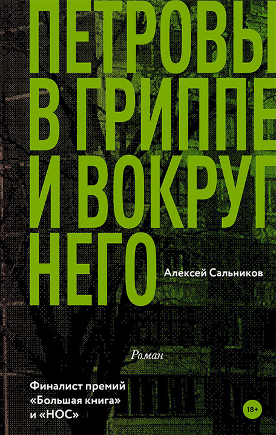

<!DOCTYPE html>
<html prefix="og: http://ogp.me/ns#"></html>
<head>
  <meta charset="utf-8"/>
  <meta name="viewport" content="width=device-width, initial-scale=1.0"/>
  <meta property="og:url" content="http://chernotrop.reviews/salnikov-petrovs"/>
  <meta property="og:type" content="article"/>
  <meta property="og:title" content="Вылизан, но"/>
  <meta property="og:description" content="О том, как желание угодить читателю испортило новый роман Алексея Сальникова"/>
  <meta property="og:image" content="http://chernotrop.reviews/img/salnikov-petrovs-preview.jpg"/>
  <meta property="og:image:width" content="1200"/>
  <meta property="og:image:height" content="600"/>
  <link href="https://fonts.googleapis.com/icon?family=Material+Icons" rel="stylesheet"/>
  <link rel="stylesheet"/><!-- Yandex.Metrika counter --> <script type="text/javascript" > (function(m,e,t,r,i,k,a){m[i]=m[i]||function(){(m[i].a=m[i].a||[]).push(arguments)}; m[i].l=1*new Date();k=e.createElement(t),a=e.getElementsByTagName(t)[0],k.async=1,k.src=r,a.parentNode.insertBefore(k,a)}) (window, document, "script", "https://mc.yandex.ru/metrika/tag.js", "ym"); ym(56951962, "init", { clickmap:true, trackLinks:true, accurateTrackBounce:true, webvisor:true, trackHash:true }); </script> <noscript><div></div></noscript> <!-- /Yandex.Metrika counter -->
  <title>Вылизан, но</title>
<link href="./css/style.bundle.css" rel="stylesheet"></head>
<body class="body_light">
  <header class="header header_dark">
    <div class="header__logo">
      <div class="logo logo_dark"><a class="logo__link" href="/">ЧЕРНОТРОП</a></div>
    </div>
    <nav class="header__menu"><a class="menu-item menu-item_active" href="index.html" target="blank">главная</a><a class="menu-item" href="contacts.html">контакты</a><a class="menu-item" href="http://ttttt.me/blacktrope" target="blank">telegram-канал</a>
    </nav>
    <div class="header__menu_mobile" id="modeValue"><a href="menu.html">
        <svg xmlns="http://www.w3.org/2000/svg" width="24px" height="24px" viewBox="0 0 24 24">
          <path d="M0 0h24v24H0z" fill="none"></path>
          <path class="icon_white" d="M3 18h18v-2H3v2zm0-5h18v-2H3v2zm0-7v2h18V6H3z"></path>
        </svg></a>
    </div>
  </header>
  <article class="article">
    <div class="article__header">
      <h1 class="article__headline">Вылизан, но</h1>
      <p class="article__description">О том, как желание угодить читателю испортило новый роман Алексея Сальникова</p>
    </div>
    <div class="article__content">
      <div class="article__content-row">
        <div class="article__content-left">
          <p>«Петровы в гриппе…» — редкий пример того, как поэтический опыт автора благотворно сказывается на его прозе. Сальников смотрит на привычные нам вещи с абсолютно иного ракурса и подмечает детали, которые мы неоднократно прокручивали в голове, но никогда не озвучивали вслух.</p>
          <p>Как и любой роман эпохи постмоденизма, «Петровы в гриппе…» написан в иронической манере, но в тексте нет ни грамма сарказма. Сальников не желает посеять в читателе споры язвительности, юмор нужен ему в качестве строительного материала для характеристик героев и для более точного описания действительности.</p>
          <p>Вообще, Петровы дико странные, но от этого притягательные люди. Петров никак не может понять, что происходит с его жизнью и считает себя из-за этого туповатым, Петрова ничего особо не чувствует даже к собственному сыну, а Петров-младший к обоюдному ужасу родителей с каждым годом всё больше становится похожим на них самих.</p>
        </div>
        <div class="article__content-right">
          <figure>
            <figcaption>Алексей Сальников «Петровы в гриппе и вокруг него». Издательство «АСТ», 2017. 370 с.</figcaption>
          </figure>
        </div>
      </div>
      <div class="article__content-row">
        <div class="article__content-left">
          <p>При этом Петровых окружают до слёз реальные люди. Иногда кажется, что видел их вчера на улице или встречал в магазине: продавщицы, менты, мамочки с детьми, учителя и врачи запечатлены фотографически, но (повторюсь) их действия Сальников описывает с оригинально деконструированного ракурса.</p>
          <p>По ходу повествования бытовой иронический сюжет начинает сбоить, проваливаясь в мистический триллер так же, как мальчик Уилл из «Очень странных дел-2» проваливается в параллельное измерение. Сальников чутко добавляет роману новый вектор именно тогда, когда основная канва немного надоедает и это ещё больше подчёркивает талант автора.</p>
          <p>Впервые за долгие годы читаешь о провинции, не испытывая отвращения (любовь к Уралу ощущается на каждой странице) и невольно вспоминаешь свой город с такими же промзонами, дымящими трубами и несерьёзными, в общем-то, пробками на улицах.</p>
          <p>Хочется даже взять билет на поезд и махнуть под Новый год на малую родину, но, увы, у Сальникова хоть и реалистичная, но всё же сказка и попасть в неё наяву, сменив декорации, невозможно. Зато вполне реально погрузиться в этот сказочно-странный мир на время — роман выложен на Букмейте в свободный доступ.</p>
          <div class="article-author">⚒︎<br/><span></span><a href="http://soshnikov-writing.art/" target="blank"><span>Артём Сошников</span></a></div>
          <div class="article-year"><span>Петроград</span>, <span>2017</span>
          </div>
        </div>
      </div>
    </div>
  </article>
<script type="text/javascript" src="./js/bundle.js"></script></body>